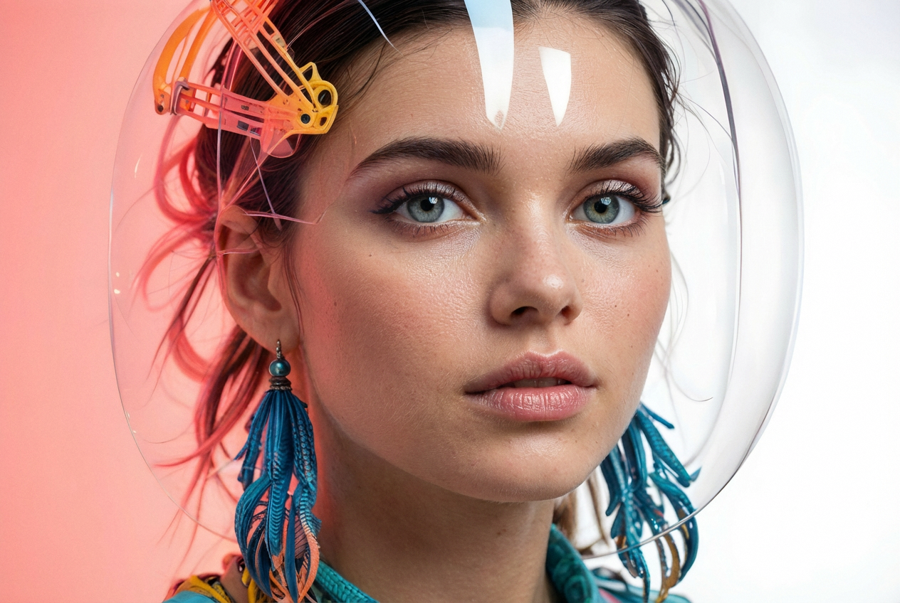
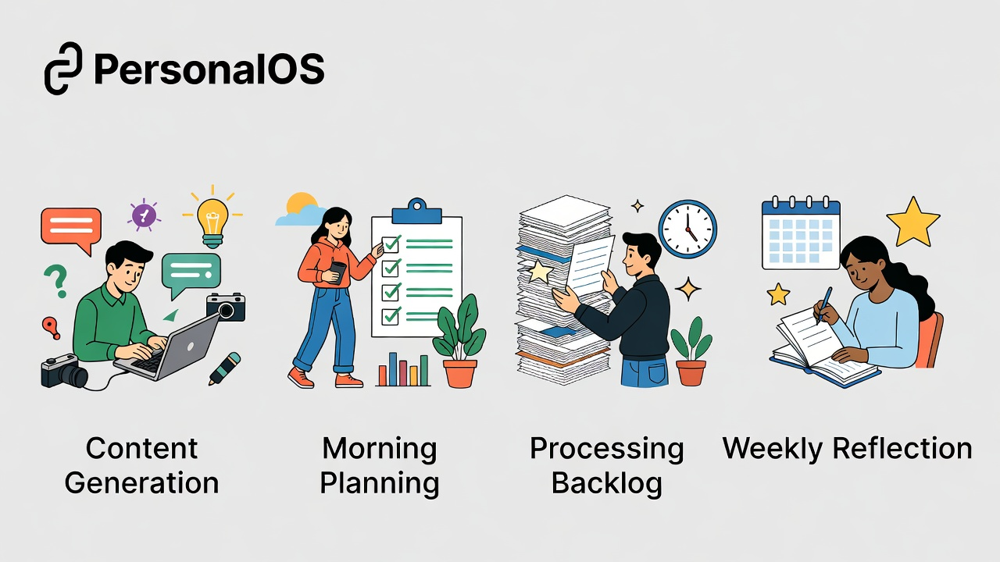

Fundamentos de Inteligencia Artificial
Herramientas y usos prácticos
"Los analfabetos del siglo XXI no serán aquellos que no sepan leer y escribir, sino aquellos que no puedan aprender, desaprender y reaprender."
— Edgar Morin (filósofo y sociólogo francés)
Así como la máquina de escribir fue reemplazada por el ordenador, y el reloj analogico por el digital... la Inteligencia Artificial Generativa es el siguiente paso. No va a parar.

Principio clave: Cada unidad de trabajo ingenieril debe hacer las unidades siguientes más fáciles. El conocimiento se capitaliza, no se descarta.
Modo Incógnito:私密 mode — like browser, tus búsquedas no se guardan, no se usa para entrenar modelos.
+1 877 224 1042
La IA de Microsoft en tu bolsillo. Preguntá, creá imágenes, resolvé dudas.
No es como Google. Es como hablar con un humano. Cuanta más información, mejor respuesta.
"Un café" = el camarero te da cualquiera
"Cortado con leche de soja templada, taza grande, tostada de pan de semillas con mermelada de melocotón" = exactamente lo que querés
Con la IA: cuanta más especificidad, mejor resultado
Tokens: Cómo la IA divide tu texto para procesarlo. Cada palabra se fragmenta en unidades que ella puede entender y priorizar.
Transformers: Creados por Google en 2016 para AlphaGo. Son los "cerebros" que recuerdan conversaciones y extraen significado. Optimus Prime sería nuestro aliado.
Baja temperatura: Datos concretos, ejercicios estructurados, respuestas precisas.
Alta temperatura: Gamificación, juegos, ideas creativas, soluciones innovadoras.
"Si no sabemos lo que queremos conseguir de la IA, va a ser muy difícil que lleguemos a ese camino."
— Alicia en el País de las Maravillas
Se inventa las respuestas con total seguridad. Como un amigo que no sabe la respuesta pero te la dice igual.
Regla de oro: Si no sabés del tema, no podés verificar si la IA te está mintiendo. La responsabilidad es tuya.
Microsoft invirtió en OpenAI → Copilot usa GPT-4. Apple tiene acuerdo con OpenAI. Cada una usa el modelo de forma diferente.
GPT-3 → Solo texto
GPT-4 → Texto + Imágenes
GPT-4o → Omnicanal (texto + voz + imágenes + audio)
"o" = Omnicanal —le preguntás como hablándole, le mandás fotos, te devuelve voz.
Instructions Personalizadas:
GPTs: Modelos especializados que hacen UNA cosa muy bien. Como apps en tu móvil — buscás la que necesitás.
En la barra de direcciones de Chrome:
@gemini + tu pregunta
→ Se abre Gemini directamente con tu consulta
Tu biblioteca personal de IA. Subís fuentes, ella te responde sobre ellas.
Subís todos los documentos de estudio →Os preguntás sobre ellos →Os hace preguntas de examen
PDFs de artículos → Resúmenes comparados → Análisis de 5 papers en 10 minutos
Videos de YouTube → Puntos clave → Cuestionarios → Guías de estudio
Instrucciones de lavadora → Resumen simple → FAQs para clientes
Torrevieja, con piscina
Personalizado con nombre
Estilos diversos, 2K/4K
Copilot + WhatsApp: "Creá una imagen de un apartamento en Torrevieja estilo Lego con piscina" → Te lo genera.
En herramientas públicas: no al 100%. En modelos locales: sí. Anonimizá siempre datos sensibles.
Si los descargaste para uso propio, podés procesarlos localmente. No subirlos a servidores externos.
Usálas con transparencia — indicá que fueron creadas con IA. Cada plataforma tiene sus políticas.
Quien use bien la IA reemplazará a quien no la use. El expertise humano sigue siendo insustituible.
No esperes a dominarlo todo. Elegí una tarea, observá, iterá.
"Las cosas se pueden ver, se pueden escuchar, pero hasta que no las probamos... no las aprendemos."